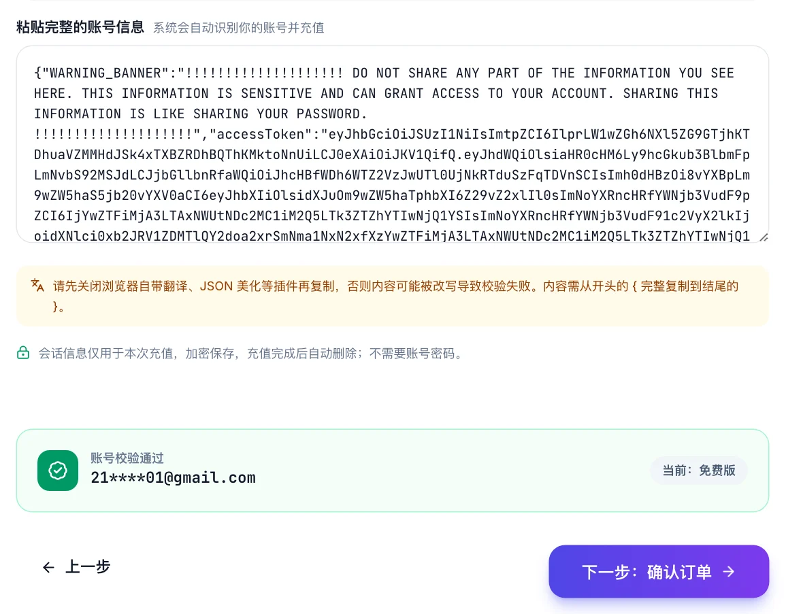
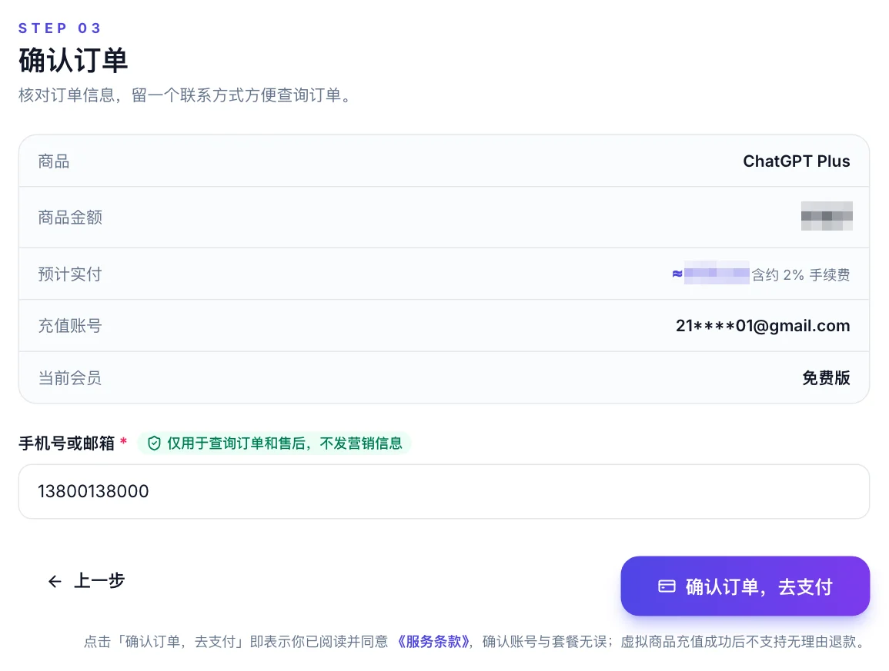
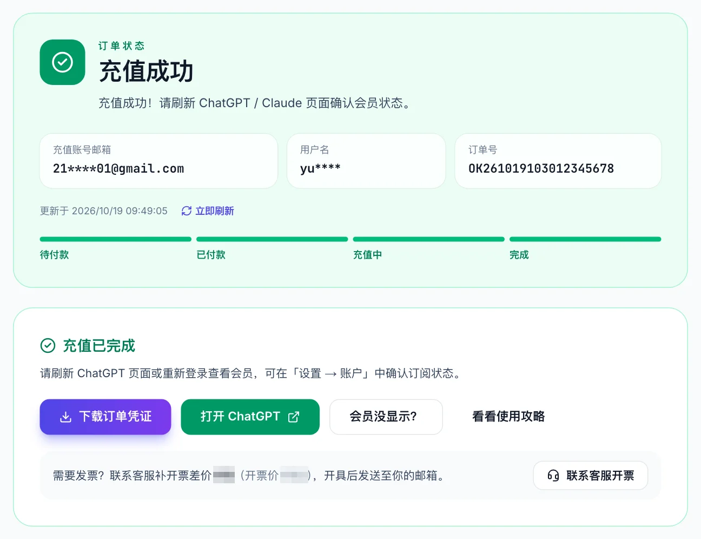
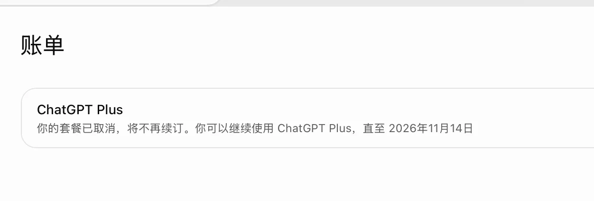

ChatGPT 充值入口与教程 2026：Plus / Pro 支付宝微信 4 步开通，Go、Plus、Pro 各档区别
最后更新：2026 年 11 月 25 日 · 人民币价格按文末核对日 OKAI66 套餐页核对；套餐权益按 OpenAI 官方定价页与帮助中心核对，出处列在文末。发现过期内容欢迎提 Issue。
ChatGPT 充值入口：支付宝 / 微信开通 Plus / Pro，okai66.com →
ChatGPT 充值在国内分两条路：有海外信用卡可在官网升级，没有海外卡可通过第三方平台用支付宝或微信按月开通 Plus 与 Pro，只需提交不含密码的会话信息，直接充到自己账号上。
没时间看全文，先看这 5 条：
- 充值入口：okai66.com 套餐页，支付宝、微信都能付。
- 怎么充：选套餐 → 粘贴账号会话信息并校验 → 付款 → 自动到账，一共 4 步，付款后通常几分钟完成。
- 多少钱：Plus ¥165 / 月，Pro 100 ¥830 / 月，Pro 200 ¥1,500 / 月，Pro 500 ¥4,000 / 月（2026 年 11 月 11 日套餐页价格）。
- 充到哪：充到你自己的 ChatGPT 账号上，不要密码、不换号，聊天记录都在。
- 之后呢：不会自动续费，到期后要用再充；没充成功原路退款。
目录
- 充值 4 步流程（支付宝 / 微信，附截图）
- Plus、Pro 各档人民币充值价格
- ChatGPT Free、Go、Plus、Pro 区别（按官方定价页）
- Plus 和 Pro 怎么选
- 充值前先确认这 5 件事
- 充值常见问题与解决办法
- 在官网自己付款时的常见报错
- 常见问题 FAQ
- 资料来源
ChatGPT 充值 4 步流程（支付宝 / 微信，附截图）
OpenAI 官方定价页写的付款方式是信用卡，帮助中心列出的各地区本地付款方式里没有支付宝和微信，支持的国家 / 地区列表里也没有中国大陆。所以做 ChatGPT 国内充值用支付宝、微信付款，走的都是第三方平台。下面是在 OKAI66 上的实际流程，ChatGPT Plus 充值与 ChatGPT Pro 充值各档操作完全一样。
截图是 2026 年 10 月的界面，价格做了遮盖；现在套餐页多了 Pro 500 一档，其余步骤没变。
第 1 步：选择 ChatGPT Plus 或 Pro 充值套餐
打开 套餐页，选 Plus、Pro 100、Pro 200 或 Pro 500，点「立即升级」进入下单页。

同一个账号只下一单。重复充值会互相覆盖，时长不会叠加。
第 2 步：复制会话信息并校验账号
充值系统要知道给哪个账号充，但不需要你的密码，用的是账号的「会话信息」。
- 在浏览器里登录要充值的 ChatGPT 账号。
- 在同一个浏览器里打开
https://chatgpt.com/api/auth/session，页面会显示一段以{开头、以}结尾的文本。 - 按 Ctrl+A（Mac 是 Cmd+A）全选后复制。不要手动拖选，容易漏掉首尾字符。

回到下单页粘贴，点「校验账号」。校验通过后页面会显示这个账号的邮箱、用户名和当前套餐，对一下是不是你要充的那个号。

如果账号已经是 Plus 或 Pro，页面会要求勾选「确认覆盖」。新套餐会替换原会员，原来剩下的天数不会叠加，离到期还很久的话建议到期后再充。
第 3 步：确认订单并用支付宝或微信付款
填一个常用手机号或邮箱（只用来以后查订单），确认订单。

进入订单页后选支付宝或微信。电脑上是扫码，手机上会直接跳到支付宝或微信 App；没有苹果设备的手机用户同样适用，细节见 安卓 ChatGPT Plus。

支付通道手续费由买家承担，实付金额以支付页面显示为准。未付款的订单 30 分钟后会自动关闭。
第 4 步：等待自动到账并回 ChatGPT 核对套餐
付款后系统自动充值，订单页会依次显示「已付款 → 充值中 → 完成」。

完成后回到 ChatGPT 刷新页面，没变化就退出重新登录，在设置的账户 / 账单页确认已经显示对应套餐。

ChatGPT 充值价格：Plus、Pro 各档人民币多少钱
| 套餐 | OKAI66 充值价（2026-11-11） | OpenAI 官方月费 | 适合谁 |
|---|---|---|---|
| Plus | ¥165 / 月 | $20 | 日常写作、学习、办公、轻度写代码 |
| Pro 100 | ¥830 / 月 | $100 | 每天用 Codex，Plus 额度经常不够 |
| Pro 200 | ¥1,500 / 月 | $200 | 高强度开发、长任务、大项目 |
| Pro 500 | ¥4,000 / 月 | $500 | 多项目并行，需要超快模式 |
- 人民币价格会随汇率和渠道成本调整，下单前以 套餐页 实时显示为准。
- 在线付款另有支付通道手续费，金额在支付页面单独显示。
- OKAI66 套餐页目前只有 Plus 和 Pro 三档，没有 Go。
- 官方美元价来自 OpenAI 帮助中心；官方定价页会按你所在地区显示当地货币，看到的数字可能不是美元。
ChatGPT Free、Go、Plus、Pro 区别（按官方定价页）
下表每一格都摘自 OpenAI 官方定价页（2026 年 11 月 11 日中文版），没有加自己的推测。
| 对比项 | Free 免费版 | Go | Plus | Pro |
|---|---|---|---|---|
| 官方定位 | 日常任务的智能解决方案 | 扩展访问权限 | 以更先进的智能完成更多工作 | 大幅提升工作效率 |
| 模型 | GPT-6 文字对话次数不限 | 同免费版，带工具的消息更多 | 包括 GPT-6 在内的高级推理模型 | 由 GPT-6 Astra 驱动的 Pro 推理 |
| 图像生成 | 受限 | 更高额度 | 更复杂、更精准 | 更快速、无限量 |
| 文件上传 | 受限 | 更高额度 | 更高配额 | 更高配额 |
| 深度研究 | 有限使用 | 有限使用 | 增强版 | 最高用量 |
| 记忆与上下文 | 受限 | 更长的记忆 | 更强 | 最大容量 |
| Codex | 有限使用 | 有限使用 | 更高使用量 | 更长的 Codex 和工作会话 |
| 项目、计划任务、自定义 GPT | 定价页未列出 | 可访问，受可用性和存储限制 | 有 | 更多 |
| 广告 | — | 可能包含广告 | — | — |
| 其他 | — | — | 抢先体验新功能 | 3 档用量可选、全天候智能体 dot、新功能研究预览 |
几点补充，同样来自官方帮助中心：
- Go 可以用推理（Think，使用 GPT-5.6 Luna），但不含 GPT-5.6 Sol，部分高级功能需要 Plus 或更高套餐。
- Plus、Go、Pro 都只能按月付，官方目前不支持年付或一次预付多个月。
- 订阅不包含 API 用量，用 API Key 要另外按量付费。
- 「无限」都有前提：官方注明无限制使用需遵守防滥用规范，高峰期可能有临时限制。
- 模型名称和额度会随版本调整，具体以你账号里的模型选择器为准。
逐项展开的版本见 ChatGPT Go、Plus、Pro 区别详解。
Pro 100、Pro 200、Pro 500 有什么不同
| 档位 | 官方月费 | 超快模式 | 内含用量 |
|---|---|---|---|
| Pro 100 | $100 | 不包含 | 三档里最低 |
| Pro 200 | $200 | 不包含 | 高于 Pro 100 |
| Pro 500 | $500 | 包含 | 三档里最高 |
按官方帮助中心的说明，三档的差别在「工作」和 Codex 的内含用量，以及只有 Pro 500 带超快模式。详细说明见 Pro 100、Pro 200、Pro 500 区别。
Plus 和 Pro 怎么选
- 第一次付费，选 Plus。 日常问答、写作、翻译、查资料、偶尔写代码，Plus 的额度够用。
- Plus 的 Codex 额度每周都用完，升 Pro 100。 它和 Plus 的差别主要是用量更高，以及可以用 Chat 里的 Pro 模型。
- Pro 100 也经常用完，再看 Pro 200。 没碰到上限之前不用提前买高档位。
- 需要超快模式或多个项目同时跑，才考虑 Pro 500。
- 只想少看到限额提示、预算有限，可以看 Go，但 Go 要在官网自己用信用卡订阅。
在 OKAI66 从 Plus 升 Pro 是覆盖，不是补差价：新套餐从升级当天重新算一个月，原 Plus 剩下的天数不会折算。快到期时再升最划算。
查看 Plus / Pro 各档实时价格，okai66.com 套餐页 →
充值前先确认这 5 件事
- 账号能正常登录。 打开 chatgpt.com 能进对话页面。
- 浏览器里登录的是要充的那个号。 有多个账号的先切换好，充值会落在你提交会话信息的账号上。
- 关掉翻译插件和 JSON 美化插件。 它们会改写会话信息页面的内容，导致校验失败。
- 账号没有欠费，也不在团队工作区里。 下单页会检查订阅来源、欠费和工作区，不符合会在付款前拦下，不会让你白付钱。
- 原会员快到期再充。 充值是覆盖，剩余天数不叠加。
充值常见问题与解决办法
下面这些是在 OKAI66 充值时会遇到的情况，处理办法按其官方教程整理。
| 现象 | 原因 | 处理 |
|---|---|---|
| 校验时提示缺少字段 | 会话信息没复制完整，或被插件改写 | 关掉翻译和美化插件，用全选重新复制 |
| 校验时提示已过期 | 会话信息过期，或已经退出登录 | 回 ChatGPT 刷新页面，重新打开会话信息页再复制 |
| 付款后订单还是「待付款」 | 支付平台回调有延迟 | 等几分钟刷新；仍未更新就带订单号联系客服 |
| 充值中提示会话失效 | 中途退出登录或切换了账号 | 按订单页提示重新提交会话信息 |
| 订单页出现「完成安全验证」 | 充值过程中需要你配合完成一次验证 | 点按钮按提示操作，之后自动继续 |
| 订单完成但 ChatGPT 还是免费版 | 页面缓存，或登录的是另一个账号 | 退出重新登录，核对订单页显示的邮箱 |
| 关掉了订单页找不到订单 | — | 到 订单查询 输入下单时填的手机号或邮箱 |
最终没充成功的订单会原路退款。客服在线时间是每天 9:00–23:00，找客服时带上订单号和页面提示的截图。
更细的排查顺序见 ChatGPT 充值后还是免费版怎么办。
在官网自己付款时的常见报错
如果你有海外信用卡，想在官网自己订阅，遇到「付款未获批准」「银行卡被拒绝」时，OpenAI 帮助中心给的排查顺序是：
- 核对卡号、有效期、CVC 和账单地址（含邮编）。
- 确认发卡地区在支持列表内。 官方要求发卡银行位于支持的国家 / 地区，这也是国内银行卡通常过不了的原因。
- 完成 3D 安全验证。 关掉弹窗拦截和 VPN，换无痕窗口或换浏览器重试，验证过程中不要刷新结账页。
- 清除浏览器缓存和 Cookie 后重试。
- 联系发卡银行。 官方说明他们通常拿不到银行的具体拒绝原因，直接问银行最快。
不要用同一张卡反复重试。几次都过不了，说明这张卡的发卡地区或风控不符合要求，完整排查见 ChatGPT 付款失败。
还有两条官方规则值得知道：
- 在支持地区之外访问，官方写明可能导致账号被封禁或暂停。 平时尽量固定网络环境，不要多人多地共用一个账号；封号与掉订阅的区别见 ChatGPT 代充会封号吗。
- 订阅不能在账号之间转移或共享。 换账号登录不会把会员带过去，充值前务必确认账号。
没有海外卡的话，直接用支付宝或微信充值更省事：
不用海外卡，支付宝 / 微信充值 ChatGPT Plus，okai66.com →
常见问题 FAQ
Q：ChatGPT 充值入口在哪？
官网入口是登录 chatgpt.com 后点头像，选「升级套餐」，只能用信用卡等官方支持的付款方式。用支付宝或微信充值，入口是 okai66.com 的套餐页，选好套餐后按 4 步操作。
Q：支付宝微信充值 ChatGPT 需要提供账号密码吗？
不需要密码，只用到不包含密码的临时会话信息，不能修改邮箱、密码或付款方式。OKAI66 说明该信息仅用于本次充值并自动删除；充完后在设置里点「退出所有设备」也会立刻失效。
Q：ChatGPT Plus 多少钱一个月？
官方月费 20 美元。2026 年 11 月 11 日 OKAI66 的支付宝 / 微信充值价是 ¥165 / 月，在线付款另有支付通道手续费，以套餐页和支付页面显示为准。
Q：ChatGPT Plus 和 Pro 有什么区别？
Pro 包含 Plus 的全部内容，另外有 Pro 推理模型、更长的 Codex 和工作会话、更高的图像和深度研究用量，并分 Pro 100、Pro 200、Pro 500 三档用量。日常使用选 Plus，Codex 额度经常用完再升 Pro。
Q：ChatGPT Go 和 Plus 有什么区别？
Go 是低价套餐，在免费版基础上提高图像生成、文件上传等功能的额度，官方注明可能包含广告，推理用的是 GPT-5.6 Luna，不含 GPT-5.6 Sol。Plus 有高级推理模型、增强版深度研究、项目和计划任务，Codex 用量也更高。
Q：支付宝或微信充值后多久到账？
付款后系统自动充值，通常几分钟完成，订单页会实时显示进度。等了较久没变化，带订单号联系客服。
Q：充值的 ChatGPT 会员会自动续费吗？
不会。在 OKAI66 充值的套餐按月开通，到期即止，不会自动扣款。到期后想继续用，再下一单即可，流程和第一次相同。
Q：已经是 Plus，可以直接充 Pro 吗？
可以。校验账号时系统会识别当前套餐，勾选「确认覆盖」后继续。新套餐生效后替换原会员，原会员剩余天数不叠加。
Q：手机浏览器上能完成充值吗？
能。难点是复制会话信息：用系统自带浏览器登录 ChatGPT，打开会话信息页面后用「全选」再复制，不要长按拖选。付款环节手机更方便，会直接跳到支付宝或微信。
Q：没充成功钱会退回原账户吗？
会。充值失败的订单原路退款。如果是在官网自己订阅，官方规则是付款通常不可退，未使用的个人订阅在扣款后七天内联系可能获得酌情退款。
Q：可以一次充好几个月吗？
官方的 Plus、Go、Pro 都只支持按月计费，不支持年付或预付多个月。在 OKAI66 也是按月充值，到期后再续。
相关页面
- ChatGPT Go、Plus、Pro 区别详解
- ChatGPT Pro 100、Pro 200、Pro 500 区别
- 充值后还是免费版怎么办
- ChatGPT 订阅怎么取消、能不能退款
- 苹果礼品卡充 ChatGPT 失败怎么办
- ChatGPT Plus 国内开通四种方法对比
- 本文网页版（手机阅读更方便）：dsom-w.github.io/chatgpt-plus-pro-recharge
资料来源
套餐权益、官方价格和官方规则来自以下页面，核对日期 2026 年 11 月 11 日：
- ChatGPT 套餐和价格（官方定价页）
- 什么是 ChatGPT Plus？
- 什么是 ChatGPT Go？
- 关于 ChatGPT Pro 套餐档位
- 为什么我的信用卡交易被拒绝？
- ChatGPT 支持的国家 / 地区
- 多币种计费（付款方式）
- 取消 ChatGPT 订阅
- 如何申请 ChatGPT 订阅退款？
充值流程、人民币价格和售后规则来自 OKAI66 套餐页 与 充值教程。
关于本文
本文是个人整理的参考内容，与 OpenAI 无隶属关系。文中的充值入口指向第三方平台 OKAI66，属于商业导流。套餐权益、模型和额度会随官方调整，请以你账号内实际显示和 OpenAI 官方说明为准；人民币价格以下单页为准。